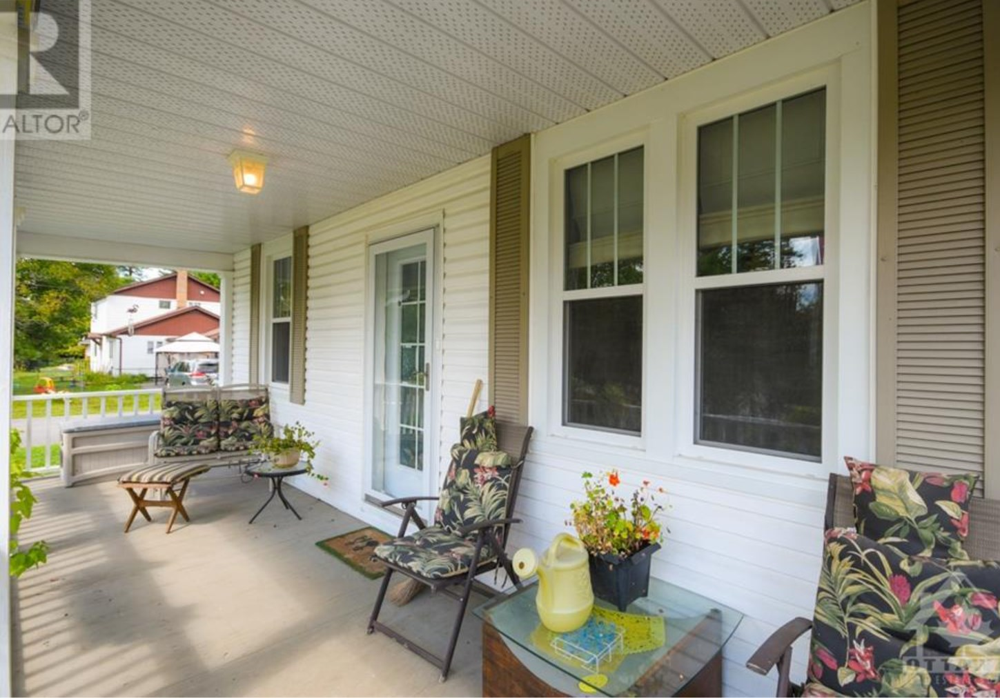
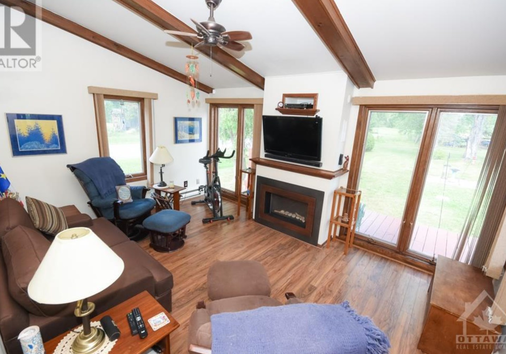
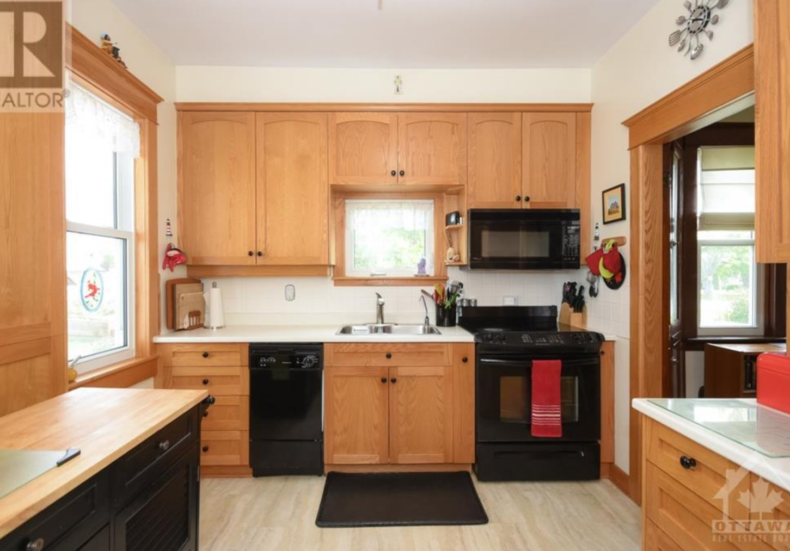
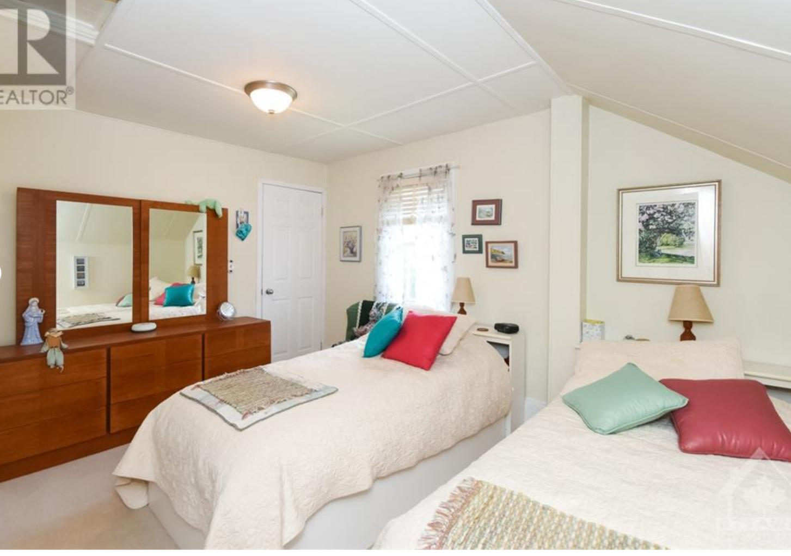

 
 
About The Home
$539,900 - 3 Beds - 2 Baths
Exceptionally well maintained storey and a half home on a quiet St. in the sought after Village of Pakenham. 2 + 1 bdrms (bdrm on main flr being used as a den) 2 full baths, detached 2 car garage, paved driveway . Main floor features a spacious lvg rm with fireplace, separate dining area, kitchen, den, 3 pc bath, laundry and fmly rm with fireplace overlooking rear yard. Second floor offers 2 generous sized bedrooms and a 3 pc bath. Lower level provides excellent storage and utility space. Lot is L shaped with access from McGifffin St as well as Renfrew St. Walk to all amenities Pakenham has to offer - 1840's General Store, Nicholson's Sundries, Centennial Restaurant, coffee shops, bakeries not to mention hiking trails, down hill skiing, 18 hole golf course and the Mississippi River for fishing and boating. This home is waiting for a new owner to move in and take advantage of all that it and Pakenham has to offer.
- Square Feet: 1850
- Style: Detached
- Building Type: House
- Heating: Forced Air
- Cooling: N/A